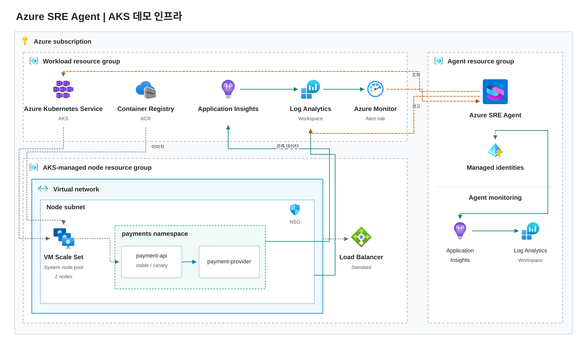

아키텍처

업무용 RG에는 AKS·ACR·업무용 App Insights·LAW가, Agent용 RG에는 SRE Agent와 자체 실행 로그가 있습니다. 실제 은행·고객 데이터·주문 DB는 사용하지 않습니다.
GitHub 점선은 별도 인증·소스 게시가 필요한 연결입니다. 배포 digest·릴리스·소스 SHA를 함께 대조합니다.
30분 진행 순서
| 시간 | 단계 | 화면에서 확인할 내용 |
|---|---|---|
| 0–2분 | 아키텍처 | 서비스 요청 경로·관측 원본·코드와 Agent 연결 위치 |
| 2–4분 | 리소스·로그 | 업무용 RG와 LAW/App Insights 연결, 실제 조회 |
| 4–5분 | 코드 소스 | GitHub Code Access와 실제 배포 소스 대조 경로 |
| 5–8분 | 팀 온보딩 | 구조 탐색·담당 범위·정상 기준 전달, 생성 지식 확인 |
| 8–10분 | 지식·Skill | 운영 문서 등록과 조사 Skill, 색인·검색 결과 |
| 10–11분 | 인시던트 연결 | Azure Monitor 접수, 기본 계획의 처리 범위 확인 |
| 11–14분 | Agent·Response Plan | payment-specialist 생성, 경고 제목·Sev2 필터·Review·활성화 |
| 14–16분 | 이슈 설명·발생 | v1.9 일부 인스턴스의 504 증상, 실제 canary 배포·요청 |
| 16–22분 | 자동 조사 | 접수된 사건·적용 계획·담당·실제 조회·로그·코드 근거 |
| 22–24분 | 결과 확인 | 원인·영향·근거·권고 조치와 미확인 항목 |
| 24–26분 | Operations Hub | 방금 조사한 사건과 운영 현황·대기 업무·활동, 원본 스레드 |
| 26–28분 | Automation | 예약 조건·UTC 일정·담당·한 번 실행한 이력과 결과 스레드 |
| 28–30분 | Live Reports | 저장된 결제 보고서·원본 쿼리·현재 데이터 재조회와 갱신 시각 |
온보딩 탐색·문서 색인·리소스 연결 재구성은 비동기입니다. 현장에서는 시작 후 다음 설정으로 이동하고 장애 발생 전에 완료를 확인합니다. 경고 수집 대기 중에는 선택한 계획과 담당 지침을 설명합니다.
연결과 팀 온보딩
export DEMO_TARGET=presenter node scripts/agent.mjs status
리소스·로그
node scripts/agent.mjs connect
업무용 RG를 선택하고 payment-logs·payment-insights 원본을 연결합니다. Agent 자체 로그용 원본과 구분합니다. Connected 표시 뒤 실제 데이터 조회를 확인합니다.
코드
https://github.com/Kimcheolhui/Azure-SRE-Agent-Demo-Sample
Builder → Code Access → GitHub에서 저장소를 추가합니다. 실제 연결 시험은 성공했지만 현재 저장소는 비어 있어 소스 게시와 배포 SHA 대조가 필요합니다. 추가 인증·동의가 표시되면 발표 전에 완료합니다.
온보딩 대화
Team onboarding에서 아래 순서로 전달합니다. 구조 탐색이 끝나지 않았으면 완료를 기다리는 대신 팀 맥락을 보충합니다.
우리 Payments 팀의 서비스 온보딩을 진행해 주세요. 연결된 Azure 리소스와 GitHub 저장소에서 서비스 구조·호출 관계·배포 구성을 탐색하고, 확인한 사실과 추가로 필요한 정보를 구분해 주세요. 리소스를 변경하지 마세요.
Payments demo 팀은 payments namespace의 payment-api와 payment-provider를 담당합니다. API는 카드와 계좌 요청을 provider 승인 API로 전달합니다. provider는 서명 계산을 수행하며 실제 은행·고객·주문 DB는 없습니다.
정상 기준은 카드와 계좌 각각 새 요청 20건에서 실패 0건, p95 1,000ms 이하입니다. provider 호출의 기본 제한은 3초이며, 타임아웃은 해당 요청에만 격리되어야 합니다. 동시에 실행 중인 다른 요청과 이후 정상 요청은 성공해야 합니다. Pod Ready나 /health만으로 정상이라고 판단하지 마세요.
확인한 구조·정상 기준·조사 주의사항을 팀 지식에 저장해 주세요. 저장한 파일과 출처를 알려 주고, 직접 확인한 내용과 내가 제공한 설명을 구분해 주세요.
지식·Skill·담당·계획
node scripts/agent.mjs knowledge node scripts/agent.mjs search node scripts/agent.mjs skill node scripts/agent.mjs agent node scripts/agent.mjs incidents
지식은 서비스의 사실과 정상 기준, Skill은 조사 순서, 하위 Agent는 조사 역할, Response Plan은 사건을 선택해 그 역할로 전달하는 설정입니다. 제목은 실제 payment-api-errors 경고로 좁히고 Sev2·payment-specialist·Review를 확인합니다. 포괄적인 quickstart 계획은 비활성화합니다.
실제 장애와 원인 조사
v1.9 canary만 결함 코드를 사용합니다. A는 계산량이 큰 카드 서명 요청입니다. A 시작 2.9초 후 B를 실행하고 A 취소 뒤 C를 실행합니다. 함수 밖의 공유 Controller 때문에 B와 C까지 취소되는 실제 코드 결함입니다.
node scripts/demo.mjs baseline node scripts/demo.mjs incident
스크립트는 새 canary Pod 내부에서 요청을 보내 네트워크 지연으로 동시성이 깨지는 것을 방지합니다. 정상 기준선은 카드·계좌 각각 20건으로 측정합니다.
새 버전 적용 후 일부 인스턴스에서 결제 요청이 504로 실패한다는 보고가 있습니다. 최근 30분의 원인과 영향 범위를 조사해 주세요. 관련 지식과 Skill을 활용하고 실제 요청·로그·배포 코드 근거를 연결하세요. 리소스를 변경하거나 결제를 재시도하지 마세요.
사건 ID와 조사 스레드를 열고 계획·담당·실행 쿼리·원시 결과·읽은 코드 위치를 확인합니다. 대화형 요청으로 시작했다면 자동 경고 접수로 표현하지 않습니다. GitHub 대신 배포 소스 스냅샷을 사용했다면 그 출처를 분명히 밝힙니다.
복구와 다음 시연 준비
node scripts/demo.mjs recover
canary를 정상 digest로 바꾸고 새 카드·계좌 요청을 검증합니다. 경고 해제는 별도 확인합니다. 다음 장애는 새로운 Pod와 새로운 UTC 구간으로 시작합니다.
조사 이후의 운영 기능
Operations Hub
시연용 Agent를 그대로 유지한 채 이번 사건·활동·대기 상태를 찾고 방금 확인한 원본 조사 스레드로 이동합니다. 같은 서비스라도 검증용 Agent의 별도 스레드와 혼동하지 않습니다.
Automation
unset DEMO_TARGET
이제 사전 준비한 검증용 Agent의 예약 작업·보고서로 전환합니다. 대상·담당·점검 조건과 UTC cron을 확인합니다. 00:00 UTC는 09:00 KST입니다. 한 번 실행한 작업의 이력과 최종 결과를 확인하고 Paused 복귀까지 확인합니다.
node scripts/features.mjs schedule-run node scripts/features.mjs schedule-status
Live Reports
같은 결제 서비스의 오류율·지연·인스턴스별 현황을 저장된 보고서로 확인합니다. 작성 대화, 갤러리에 저장된 보고서, 구성 버전과 데이터 갱신을 구분합니다.
node scripts/features.mjs report-status node scripts/features.mjs report-verify
보고서 작성 프롬프트 · 결제 집계 · 오류 추이 · 요청·종속성 연결
Reload 후 원본 쿼리의 시간·단위·결과와 대조합니다. 보고서 다운로드 HTML은 정적 사본이며 이 가이드 자체도 Live Report가 아닙니다.
고객 시연 전 확인
- 실제 SRE Agent·AKS 배포와 읽기 조회, 카드·계좌 기준선 확인
- GitHub 소스 게시·Code Access 인증·실제 배포 SHA 대조
- 온보딩 지식 저장과 새 대화 검색, 문서 색인·Skill 등록 확인
- 504 Telemetry, Azure Monitor Fired, 해당 계획·담당의 자동 조사 확인
- Operations Hub 원본 스레드, 예약 작업 실행 이력과 Paused 확인
- 네이티브 Live Report의 저장·버전·실제 재조회 확인
실측과 API 결과는 artifacts에 저장됩니다. 배포·실행·정리 명령에서 검증 범위와 비용·권한을 확인합니다. 단위 테스트 통과를 실제 Azure·모델·UI 검증으로 대신하지 않습니다.